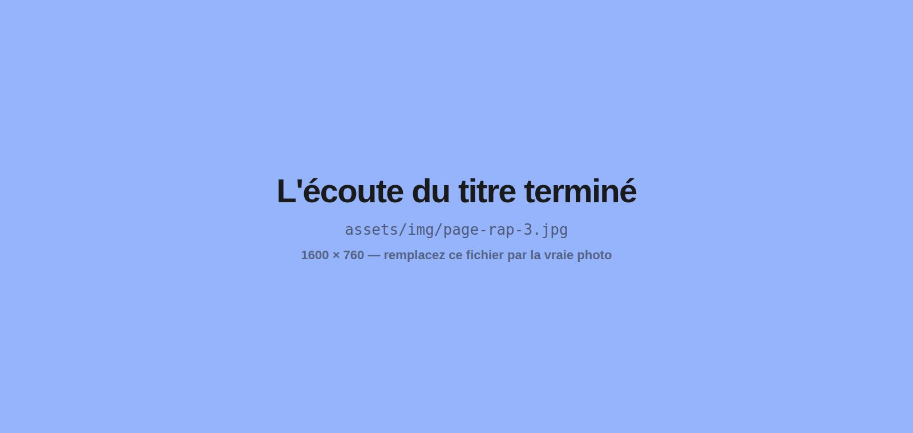

Ateliers rap
De la rédaction d'un texte à l'enregistrement et au clip. Une immersion artistique aux objectifs très concrets.
C'est l'atelier qui attrape les groupes que le mot « poésie » fait fuir. Même exigence d'écriture, même travail d'oralité — mais avec un résultat tangible à la fin : un titre qui existe, qu'on peut faire écouter.
Comment se déroule un parcours
Choisir une instru
Le tempo et l'ambiance orientent l'écriture. Le choix collectif engage le groupe dès la première heure.
Écrire en mesures
Rimes, schémas, mesures, jeux de mots. La contrainte rythmique est une pédagogie en soi : elle rend le comptage des syllabes désirable.
Travailler le flow
Placement, respiration, débit, accentuation. Dire le texte devient un exercice technique, observable et perfectible.
Enregistrer
Prises voix, réécoutes, corrections. Les élèves entendent leur propre progression, ce qui est le meilleur des retours pédagogiques.
Réaliser un clip
Sur demande et selon le volume horaire : tournage et montage, pour que le projet sorte de la salle.
Les objectifs travaillés
Le rap, c’est quoi ?
Le rap est l'une des cinq disciplines du hip-hop. Sur des paroles scandées sur une musique rythmée, les maîtres de cérémonie abordent, chacun dans son style et son flow, des sujets tour à tour engagés, drôles ou légers. Né dans le Bronx dans les années 70, popularisé en Europe à la fin des années 1980, il est devenu en France le courant musical le plus populaire.
Et côté équipe pédagogique
L'atelier rap fait entrer par la porte du son des compétences d'écriture exigeantes. Pour une équipe éducative, c'est souvent le format qui mobilise les élèves les plus éloignés de l'écrit.

Questions fréquentes
Ce qu'on me demande le plus souvent avant de lancer un projet ateliers rap.
Un parcours complet, de la page à la restitution : choix d'une instrumentale, écriture en mesures, travail du flow, enregistrement des voix, et selon le volume horaire, tournage d'un clip. À la fin, il existe un titre qu'on peut faire écouter.
Non, je viens avec de quoi enregistrer. Une salle calme suffit pour les prises voix. Si votre structure dispose d'un studio ou d'un espace son, on s'en sert — mais ce n'est jamais une condition pour lancer le projet.
Ils appartiennent aux participants et à la structure. Je vous remets les fichiers à la fin du parcours. Rien n'est diffusé sans votre accord et sans celui des familles quand il s'agit de mineurs : la question des autorisations se règle en amont, au moment de la convention.
Le cadre est posé dès la première séance, et il est artistique avant d'être disciplinaire : une insulte n'est pas une punchline, une provocation gratuite n'est pas une image. Chercher mieux que la facilité fait partie de l'exercice, et c'est souvent là que les participants progressent le plus.
C'est même sa force. Le rap fait entrer par la porte du son des compétences d'écriture exigeantes : compter ses syllabes devient désirable quand c'est le rythme qui l'impose. C'est régulièrement le format qui mobilise les jeunes les plus à distance de la feuille.
Oui. Il vous suffit de me contacter pour discuter de votre projet : l'offre est disponible sur la plateforme ADAGE quelques heures après notre échange. Je suis également agréé par l'Éducation nationale.
Sur le terrain
Des ateliers rap, racontés
Les publics à qui cet atelier correspond le mieux
Les autres interventions
Redonnez-leur l'envie des mots
Plus de 300 ateliers menés et 5 000 participants rencontrés, dans toute la France. Décrivez-moi votre contexte, je réponds avec une proposition adaptée.